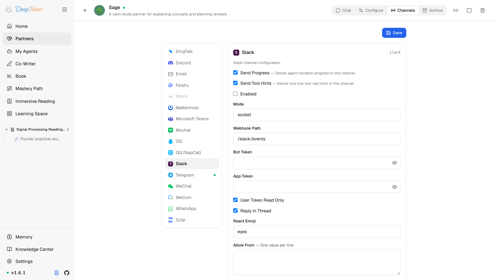

夥伴與管道Slack
DeepTutor 接入 Slack 教學！2 個 token 千萬別填反，Socket Mode 免對外網路直連工作區！
為 Partner 設定 Slack channel —— Socket Mode 應用、bot 和 app 兩個 token、討論串回覆與 DM 策略。
原文連結：https://docs.deeptutor.info/zh-cn/partners/slack/
團隊每天都在 Slack 裡溝通？想直接在頻道裡 @ 一下，就讓 AI 學習夥伴（Partner）做事？
這期就來講 Slack 管道。
slack 管道透過 Socket Mode 把 Partner 接進 Slack 工作區（workspace）：機器人（bot）用 slack-sdk 向 Slack 開一條 WebSocket 連線，所以不需要對外網路 URL、網路鉤子（webhook）或反向代理。
它是最面向團隊的管道，支援私聊（DM）、頻道 @ 提及、討論串回覆。更有意思的是，它還會在你觸發訊息上加一個確認表情回應（reaction），相當於一句"收到"。
對天天泡在 Slack 的團隊來說，這個體驗真的很爽歪歪。
但是問題來了。Slack 這裡涉及 2 個 token，很容易搞混：Bot Token（xoxb-…，來自 OAuth & Permissions）授權 API 呼叫，App Token（xapp-…，來自 Socket Mode）授權 WebSocket 連線。填反了，是 Slack 設定裡最常見的錯誤。
和 Telegram、Discord 不同，Slack 的卡片上沒有 Streaming 開關，回覆以完整訊息送達，開了 Send Progress 的話，過程解說（narration）會作為單獨的訊息投遞。

Partner 執行時先看卡片即時狀態：它應從 Connecting 進入 Connected；只有失敗狀態需要更多細節時再查日誌。
一、安裝依賴
Slack 支援隨 Partners 可選元件（extras）一起安裝，其中已包含 slack-sdk（Socket Mode 使用者端）和 slackify-markdown（Markdown -> Slack mrkdwn 轉換）。不需要額外裝任何東西。
pip install -e ".[partners]"
# 或发布包支持 partners extras 时：
pip install "deeptutor[partners]"二、建立 Slack 應用
- 開啟 https://api.slack.com/apps -> Create New App -> From scratch 。起個名字，選你的 workspace。
- 左側邊欄 -> Socket Mode -> 開啟 Enable Socket Mode 。按提示生成一個帶
connections:writescope 的 App-Level Token 並複製，這就是你的 App Token （xapp-…）。 - 左側邊欄 -> OAuth & Permissions -> Scopes -> Bot Token Scopes ，加上：
chat:write、chat:write.public、files:write、reactions:write、app_mentions:read、im:history、im:read、channels:history（要支援私有頻道再加groups:history）。轉接器用auth.test獲取自己的 bot id，不會呼叫 users API，因此不需要users:read。 - 左側邊欄 -> Event Subscriptions -> Subscribe to bot events ：
app_mention、message.im；如果 bot 要在頻道裡聽 @ 之外的訊息，再加message.channels。 - 回到 OAuth & Permissions ，點 Install to Workspace 並授權。複製 Bot User OAuth Token （
xoxb-…），這就是你的 Bot Token 。
三、設定管道卡片（channel card）
開啟 Partners -> 你的 partner -> Channels -> Slack。
| 欄位 | 怎麼填 |
|---|---|
| Send Progress | 測試時建議開啟。長任務會即時投遞過程解說。 |
| Send Tool Hints | 除錯時建議開啟；不想讓使用者看到一行工具呼叫就關掉。 |
| Enabled | 準備啟動管道時再開啟。 |
| Mode | 目前只支援 socket ，保持不動。 |
| Webhook Path | 為將來的 webhook 模式預留； Mode 是 socket 時用不上。留預設 /slack/events 即可。 |
| Bot Token | OAuth & Permissions 裡的 xoxb-… token。按金鑰儲存，儲存後會遮罩顯示。 |
| App Token | Socket Mode 裡的 xapp-… App-Level Token（需要 connections:write ）。同樣是金鑰。別和 Bot Token 填反了。 |
| User Token Read Only | 保持預設（開）。 |
| Reply In Thread | 開（預設）：bot 在觸發訊息下面的討論串裡回答。討論串內的後續訊息仍會先經過 Group Policy ；預設 mention 策略下，每條後續訊息都要 @ bot。關：回覆直接發進頻道。 |
| React Emoji | bot 加在你訊息上、表示"收到"的 emoji 名（不帶冒號）。預設 eyes 。 |
| Allow From | 一行一個值。開放測試 bot 可填 * ，正式用填 Slack 使用者 id（ U… ）。空列表拒絕所有人。 |
| Group Policy | mention （預設）：頻道裡只回答 @ 提及。 open ：所在頻道每條訊息都答。 allowlist ：只回應 Group Allow From 裡列出的頻道。 |
| Group Allow From | 頻道 id（ C… ），一行一個。 Group Policy 是 allowlist 時生效。 |
| Dm | DM 子策略： Enabled 整體開關 DM； Policy 取 open 時任何 DM 都答，取 allowlist 時只放行它自己那份 Allow From 列表裡的 id。 |
四、儲存之後
- 點 Save ，再把 Enabled 開啟。
- 啟動 partner（已經在跑的話重新啟動它，或在 Channels 面板用 reload）。
- 用允許的帳號 DM bot，或
/invite @your-bot進某個頻道再 @ 它。 - 看 partner 日誌：應該能看到 Socket Mode 連線和入站事件。
- 在日誌裡確認 sender id 之後，把 Allow From 裡的
*換成真實 id。
如何確認健康
- 日誌顯示 Socket Mode WebSocket 已連線，沒有驗證錯誤。
- 你的測試訊息一兩秒內就收到確認 reaction（預設
eyes）。 - 預設 Reply In Thread 開著時，回覆出現在你訊息下面的討論串裡。
常見問題
Slack API 報 invalid_auth / not_authed
兩個 token 填反了：xoxb-… 應該在 Bot Token，xapp-… 應該在 App Token。這是 Slack 設定裡最常見的一個錯誤。
socket 一直連不上
應用必須先啟用 Socket Mode，且 App-Level Token 必須帶 connections:write scope。如果 token 是在啟用 Socket Mode 之前生成的，重新生成一個。
頻道訊息不理，DM 正常
三道門都要查：
- bot 必須被邀請進該頻道：
/invite @your-bot。 - Group Policy =
mention時，訊息必須 @ 到 bot。 - Event Subscriptions 下必須訂閱了
app_mention這個 bot event（依賴頻道普通訊息的話，還要message.channels）。
回覆進了討論串，沒 @ 的後續訊息沒人理
Reply In Thread 只決定 bot 把回答發到哪裡，不會繞過頻道的 mention 門禁。Group Policy = mention 時，討論串裡的每條後續訊息仍要 @ bot；如果希望討論串裡每條訊息都可觸發回覆，把策略改成 open。只有想讓回覆平鋪到頻道時，才需要關閉 Reply In Thread。
相關頁面
- Channel Matrix —— 所有管道一覽
- Discord —— 類似的開發者後台設定，走 Gateway WebSocket
實際效果還會受到模型、提示詞以及具體使用場景的影響，建議大家結合自己的需求實際體驗評估。